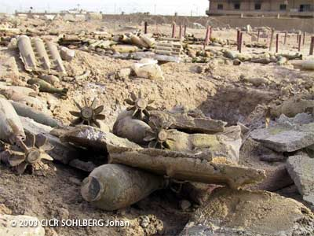

Les armes qui sont réglementées par une convention spécifique

De nombreuses conventions réglementant l’usage des armes existent.
|
Arme |
Traité |
Année |
|
Projectiles explosifs d’un poids inférieur à 400 gr |
Déclaration de Saint-Pétersbourg |
1868 |
|
Balles qui s’épanouissent dans le corps humain |
Déclaration de La Haye |
1899 |
|
Poison et armes empoisonnées |
Règlement de La Haye |
1907 |
|
Armes chimiques |
Protocole de Genève |
1925 |
|
Convention sur l’interdiction des armes chimiques |
1993 |
|
|
Armes bactériologiques (biologiques) |
Protocole de Genève |
1925 |
|
Convention sur l’interdiction des armes biologiques |
1972 |
|
|
Armes qui blessent par des éclats non localisables par rayons X dans le corps humain |
Protocole I à la Convention sur certaines armes classiques |
1980 |
|
Armes incendiaires |
Protocole III à la Convention sur certaines armes classiques |
1980 |
|
Armes à laser aveuglantes |
Protocole IV à la Convention sur certaines armes classiques |
1995 |
|
Mines, pièges et autres dispositifs |
Protocole II modifié à la Convention sur certaines armes classiques |
1996 |
|
Mines antipersonnel |
Convention sur l’interdiction des mines antipersonnel |
1997 |
|
Restes explosifs de guerre |
Protocole V à la Convention sur certaines armes classiques |
2003 |
|
Armes à sous-munitions |
Convention sur les armes à sous-munitions |
2008 |